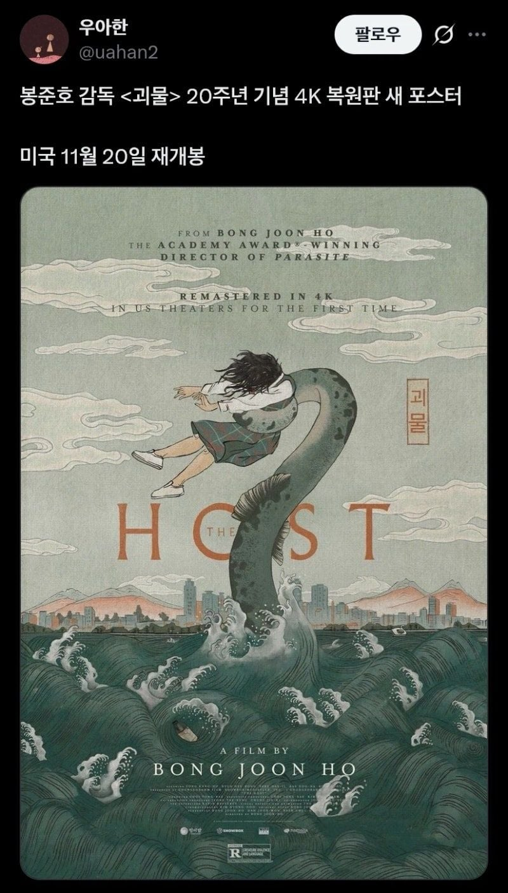
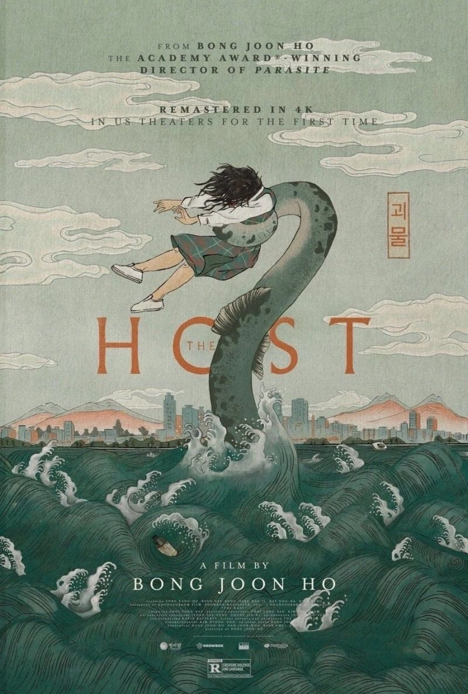
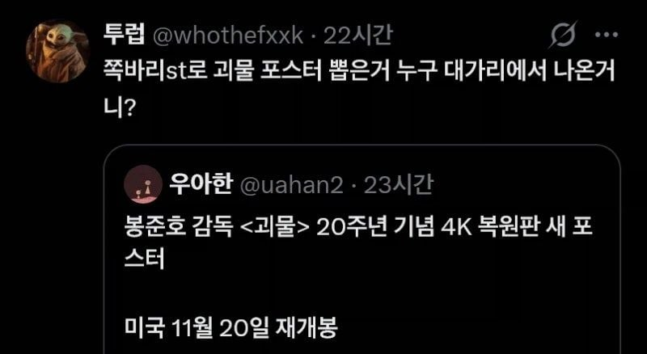
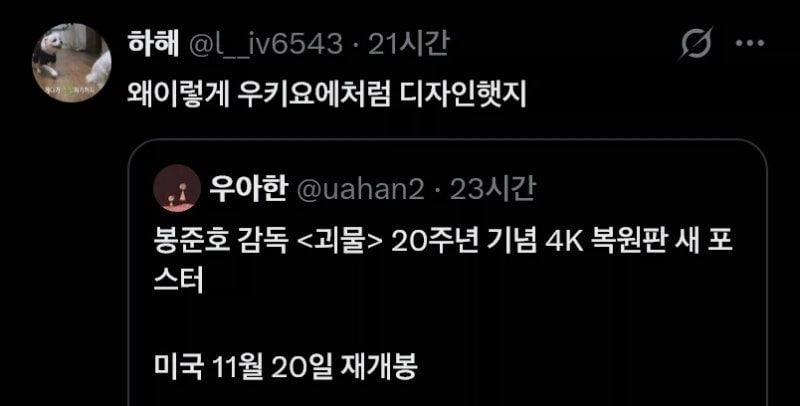
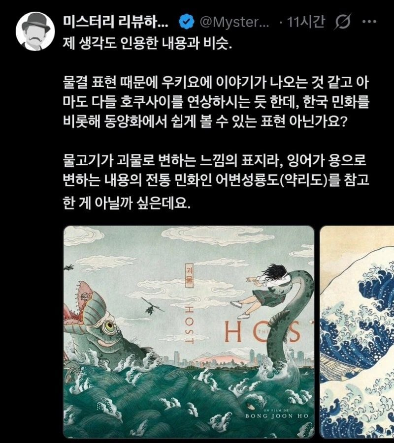
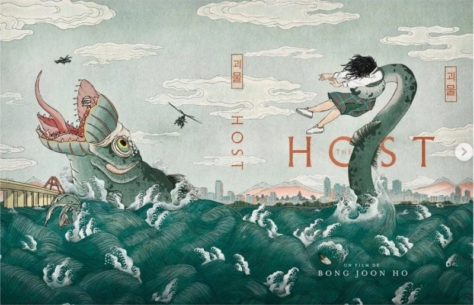
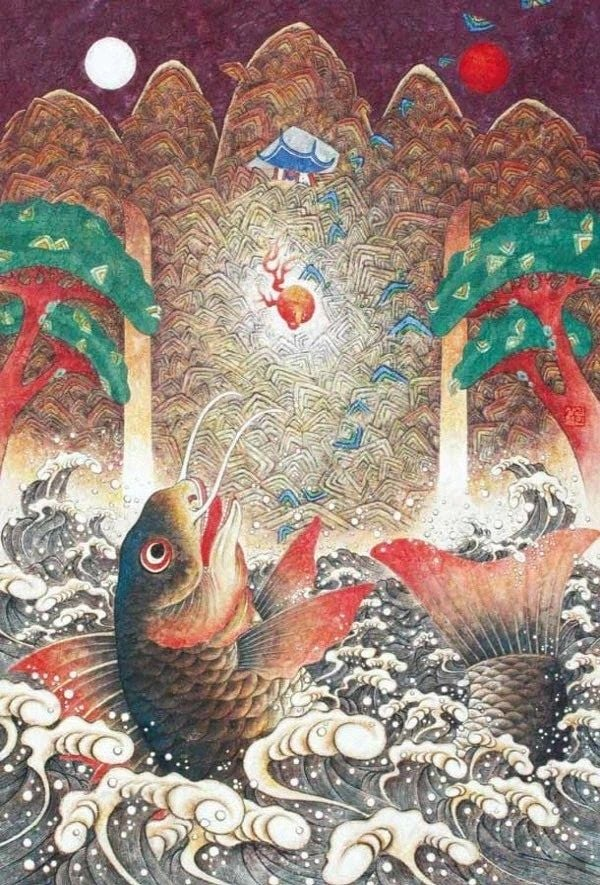
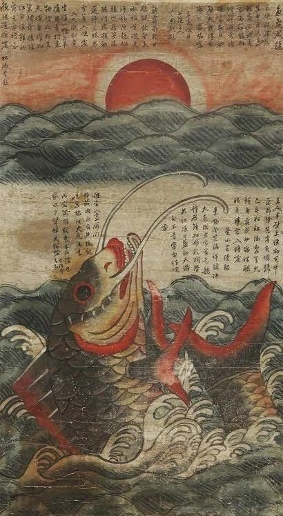
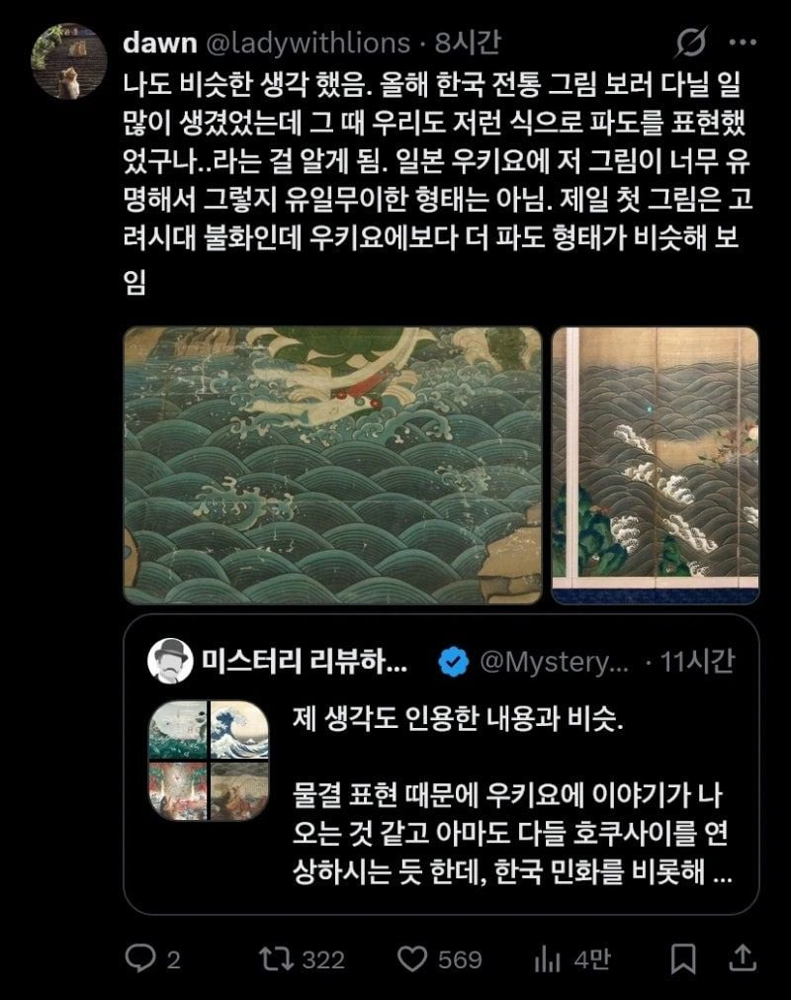
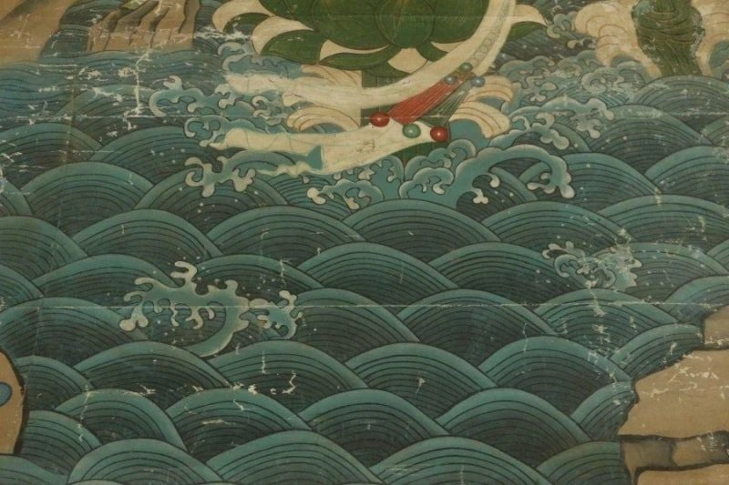
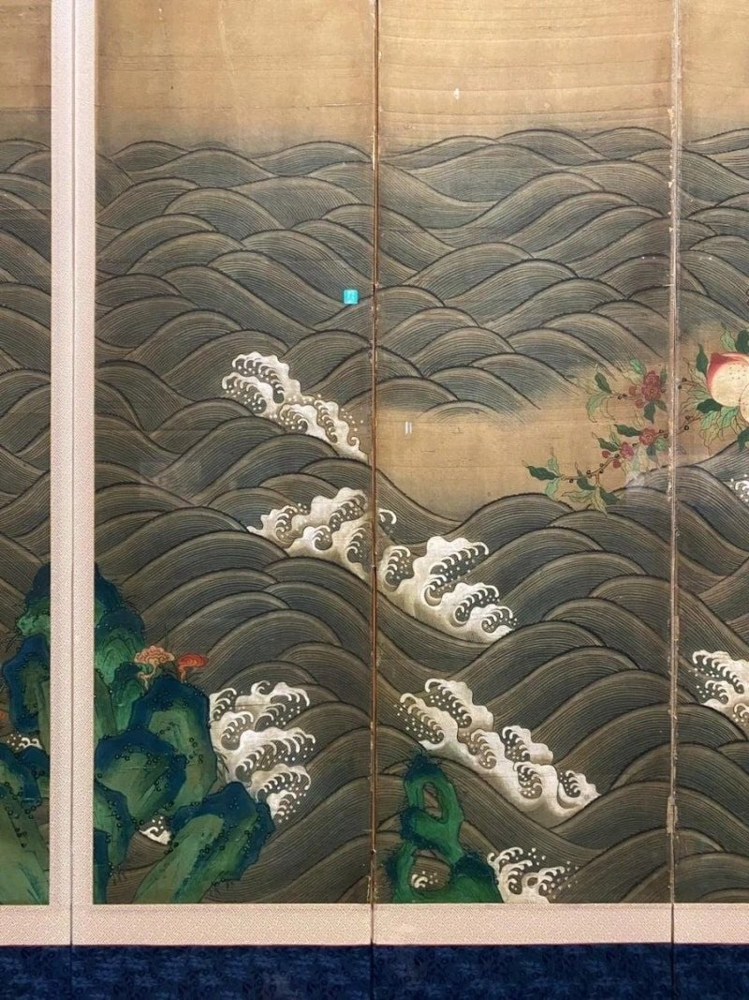
우키요에가 유명하긴 해











우키요에가 유명하긴 해
썸네일 보고 서울시 로고인줄
진짜 피곤하게 사는 병신들이 저렇게나 많구나..
한국풍이든 일본풍이든 상업영화가 어떻게 표현하든 무슨 상관이여~
아리랑 같은 전통문화를 왜색으로 표현하면 문제가 되는거지~
전국민 미야자키하야오 프로필 광풍 불었을때
아주 일상에서 살인충동 느꼈겠어~
아는만큼 보이는거지
글 상단 보고 왜색이라는 거에 동의했는데 ㅈㄴ 미안하네 한국의 전통 살린 포스터구나
일본의 문화 음식 서브컬쳐는 좋아하는데 꼭 저런 거에 발작들을 해요 굳이
저인간들 어떤 부류들인지 앎 ㅋㅋ
일본화풍이 현재 유명하긴 하지만 문명 전파방향 생각하면
조선과 삼국의 민화풍이 일본에 넘어간 영향이라보는게 적절할거 같은데
중국 당나라 시대 옷 입고 돌아다녔다가 기모노 입고 돌아다녔다고 욕먹었던 중국인 생각나네ㅎㅎ 얕은 지식가지고 아주 지들이 전문가여ㅎㅎ
그거 생각난다 한국 전통우산 사용하고있는데
어떤놈이 일본우산쓴다고 뺐어서 부숴버린거
아줌마들 발작
난 아무생각 없어서 그런가 이쁘당 그러고 말았는데
같은놈들이 부여 같은데 문화재가면 왜색 짙다고 ㅈㄹ함. 아니 여기가 원조고 일본이 가져간거라고...
역시 아는 만큼 보이는구나
빡대가리 새끼들의 발언권이 너무 커졌다
민화는 안보고 우키요에만 봤으니까 저러는거지 뭐